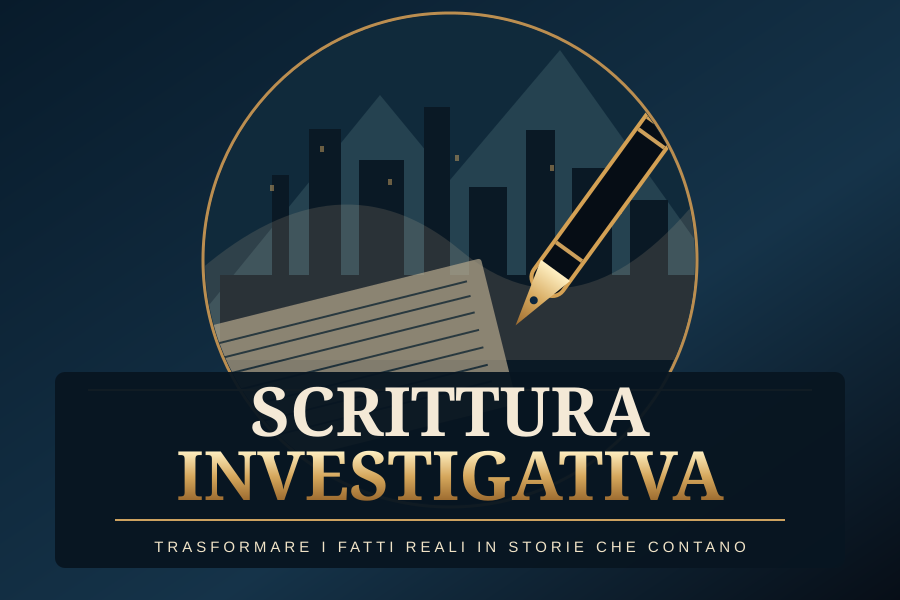

Secondo percorso · in preparazione
Scrittura Investigativa e Ricostruzione dei Fatti Reali
Dalla ricerca delle fonti alla pubblicazione di articoli, inchieste e libri documentati.
Per chi racconta storie vere: autori di libri storici, biografi, giornalisti, ricercatori indipendenti, documentaristi e autori di saggistica. Non è un corso di narrativa di fantasia.
Il metodo di lavoro
Partiremo dalla storia della scrittura d'inchiesta, per imparare poi a cercare documenti, valutarne l'autenticità, ricostruire una cronologia e scrivere senza trasformare supposizioni in fatti. Ogni affermazione rilevante dovrà essere ricondotta a una fonte oppure qualificata come ipotesi o interpretazione.
Prima lezione disponibile
Leggi la lezione 1: Come nasce la scrittura investigativa documentale →
Materiale in sviluppo, consultabile liberamente senza iscrizione o certificazione di completamento.
Biblioteca delle fonti originali
Consulta giornali digitalizzati, repertori archivistici e materiali storici selezionati per esercitazioni di scrittura. Ogni scheda spiega cosa leggere, quale errore evitare e quale testo provare a comporre.
Casi contemporanei: cosa hanno raccontato i media?
Il percorso includerà laboratori su casi di interesse pubblico già noti attraverso giornali, televisione e social. Lo studente confronterà i titoli con le fonti originali, distinguendo informazioni documentate, dichiarazioni riportate, ipotesi e punti ancora aperti. I casi saranno pubblicati soltanto dopo la verifica delle fonti e con attenzione alla privacy e alla presunzione di innocenza.
Le dieci unità didattiche
Caricamento del programma…
Laboratorio finale
Il progetto finale previsto sarà un articolo o un capitolo di saggistica basato su una ricerca documentale, accompagnato da registro delle fonti, cronologia, matrice delle affermazioni e nota metodologica sulle lacune.
È previsto un attestato privato verificabile, subordinato al superamento della valutazione finale e all'attivazione del registro digitale. Non sono attribuiti crediti formativi ufficiali.
Programma preliminare, soggetto a revisione prima dell'apertura delle iscrizioni.